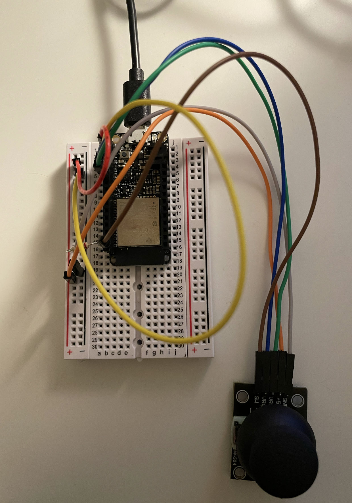

For this project, I'm using a joystick to ammulate the singing bowl sound. The softwware we will be using is Arduino IDE and Processing. For code details, you can visit my GitHub site:
First thing first, I researched on how to connect the Hiletgo joystick to Huzzah 32 ESP32 feather. It looks like this:
Now, to connect the Arduino IDE to Processing, I set up the code in processing refering to our week 13 in class session. However, the sound generating isn't connected to the joystick. I try to use print line function to get the port data, it doesn't seem to show up on Processing while it works on Arduino perfectly. Further trouble shooting needed.